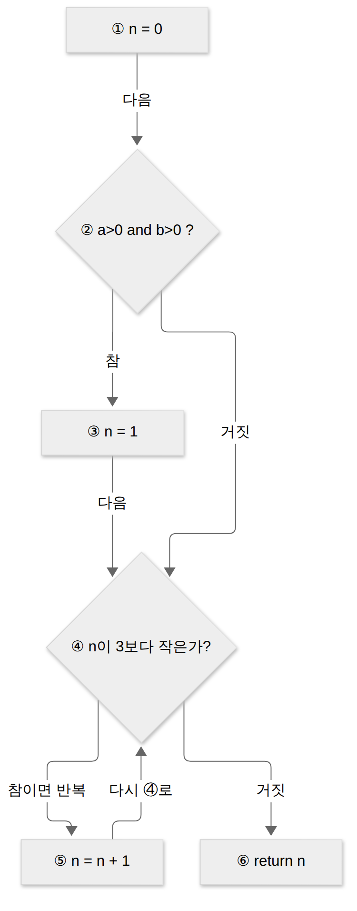
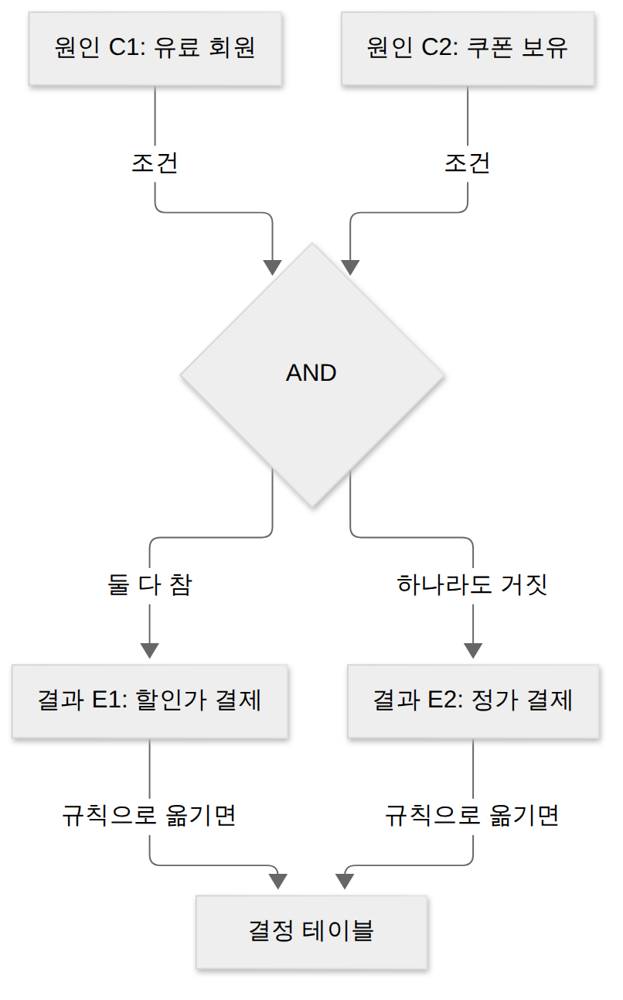
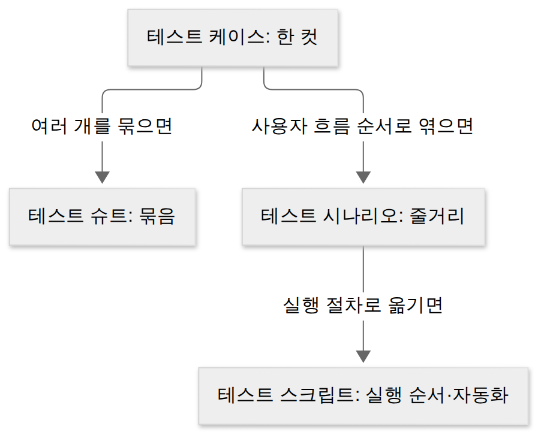
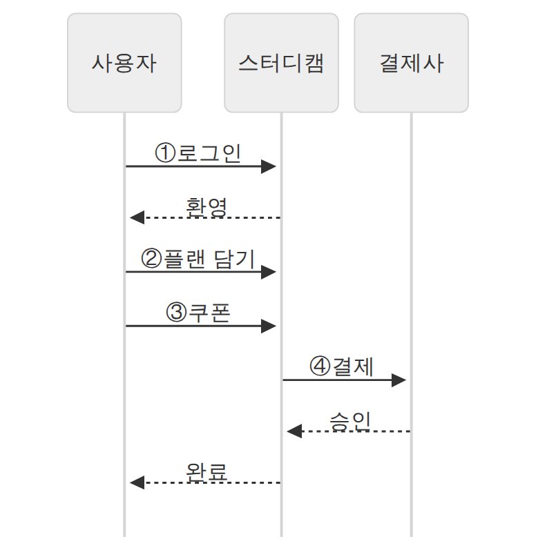
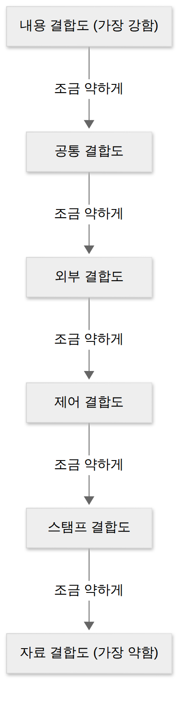

D025 · 테스트 원리·오라클·레벨(V-모델)·테스트 기법과 케이스·시나리오
A8 오늘부터 A8 「애플리케이션 테스트 관리」예요. D021에서 단위 테스트를 화이트박스·블랙박스 두 관점으로 봤고, 어제 D024에서는 품질 특성 안에 시험성이 있고 Jenkins가 빌드마다 테스트를 돌린다는 걸 봤어요. 오늘은 그 테스트를 “그냥 많이 돌려 보기”가 아니라 체계로 만드는 지식을 모아요. 사례는 D022·D024의 스터디캠이 v1.1(유료 플랜·쿠폰 결제 추가)을 내기 전에 테스트하는 장면이에요.
- 테스트 7원리와 테스트 오라클 4종을 구별할 수 있다
- 테스트 레벨(단위·통합·시스템·인수)과 V-모델의 짝, 알파·베타를 구별할 수 있다
- 화이트박스·블랙박스 기법(기초 경로·커버리지 / 동치 분할·경계값·원인-결과 등)을 상황에 맞게 고를 수 있다
- 테스트 케이스와 테스트 시나리오의 차이를 설명할 수 있다
1. 큰 그림 — 테스트는 “버그 없음”을 증명하지 못한다
테스트는 프로그램을 실행하거나 산출물을 검토해서 결함을 찾아내는 활동이에요. 요구한 대로 동작하는지 확인하고, 숨은 결함을 드러내서 고칠 기회를 만들죠. 테스트를 하는 이유는 세 가지로 정리돼요. 결함을 발견하고, 앞 단계에서 미리 검토해 결함을 예방하고, 그 결과로 품질을 높이는 것이에요.
테스트는 건강검진과 닮았어요. 검진표에 “이상 없음”이 찍혀도 절대 안 아픈 사람이 되는 건 아니고, 검사한 항목에서 못 찾았다는 뜻일 뿐이에요. 그래서 “무엇을, 언제, 어떤 기준으로 검사하나”를 정하는 체계가 필요해요. 아래 지도의 다섯 질문이 오늘 섹션 순서예요.
→ 이 장면의 결과물: 오늘 채울 다섯 칸. 스터디캠 테스트 팀이 가장 먼저 맞추는 건 “테스트를 어떤 태도로 하나”예요. 그래서 원리부터 봐요.
2. 장면 1 — 테스트 팀의 태도 맞추기 (테스트 7원리)
스터디캠 v1.1 테스트 회의에서 팀장이 “다 테스트해서 버그 0개로 내자”고 말해요. 7원리는 이 말이 왜 불가능한지, 대신 무엇을 해야 하는지를 정리한 경험칙이에요. 일곱 개를 세 무리로 나눠 보면 외우기도 쉬워요.
테스트의 한계 — 존재 증명 · 완벽 불가 · 오류-부재의 궤변
결함 존재 증명은 테스트가 결함이 있음은 보여 줄 수 있지만 없음은 증명할 수 없다는 원리예요. 100개 케이스를 통과해도 101번째 입력에서 터질 수 있으니까요. 팀장의 “버그 0개”가 바로 이 원리에 걸려요.
완벽한 테스트 불가는 모든 입력·경로 조합을 다 시험하는 건 현실적으로 불가능하다는 원리예요. 입력란 하나에 정수만 받아도 경우의 수가 수십억이에요. 그래서 위험이 큰 기능부터 우선순위를 두고 테스트 범위를 고르는 위험 기반 접근이 나와요.
오류-부재의 궤변은 결함을 다 고쳤더라도 사용자 요구를 만족하지 못하면 품질이 높다고 할 수 없다는 원리예요. 주문한 건 짜장면인데 완벽하게 조리된 짬뽕이 왔다면, 그 짬뽕에 흠이 없는 건 아무 위로가 안 되죠. 결함이 없다(부재)는 사실이 곧 좋은 제품이라는 착각(궤변)을 경계하라는 뜻이에요.
언제·어디를 — 조기 테스트 · 결함 집중
조기 테스트는 개발 초기(요구·설계 단계)부터 테스트를 시작해야 한다는 원리예요. 요구사항 문서를 리뷰하는 것도 테스트예요. 결함은 늦게 발견할수록 고칠 범위가 커지기 때문이에요.
결함 집중은 결함 대부분이 소수의 모듈에 몰려 있다는 원리로, 파레토 법칙(80:20)과 연결돼요. 버그는 이웃을 잘 사귀어요. 한 모듈에서 버그 하나를 잡으면, 그 집에 사는 친척들이 아직 몇 명 더 있다고 보는 게 안전해요. 그래서 결함이 많이 나온 모듈에 테스트를 더 쏟아요.
어떻게 유지하나 — 살충제 패러독스 · 정황 의존성
살충제 패러독스는 같은 테스트 케이스를 반복하면 더 이상 새 결함을 찾지 못한다는 원리예요. 같은 살충제를 계속 뿌리면 내성이 생긴 벌레만 남는 것처럼요. 작년 기출만 무한 반복하면 작년 시험엔 만점이지만 올해 시험엔 처음 보는 문제가 나오죠. 그래서 테스트 케이스를 주기적으로 검토하고 새로 보태요.
정황 의존성은 소프트웨어의 성격과 상황에 따라 테스트 방법을 달리해야 한다는 원리예요. 결제 모듈과 공부 기록 화면은 같은 강도로 테스트하지 않아요. 의료기기 소프트웨어와 사내 게시판이 같은 기준일 수 없는 것도 같은 이유예요.
→ 이 장면의 결과물: 위험한 결제 모듈부터, 요구 단계부터, 케이스는 계속 갱신. 그런데 테스트를 돌리면 “이 결과가 맞나?”를 판정할 기준이 필요해요.
3. 장면 2 — 결과가 맞는지 판정하기 (오라클·정적/동적·V&V)
테스트를 실행하면 결과가 나와요. 그런데 “할인가가 9,000원이 나왔다”는 결과만으로는 맞는지 틀린지 몰라요. 이걸 판정해 주는 기준이나 장치를 테스트 오라클(Test Oracle)이라고 해요. 오라클은 시험지 뒤의 정답지예요. 정답지가 전 문항에 있느냐, 일부만 있느냐에 따라 종류가 나뉘어요.
참(True) 오라클은 모든 입력값에 대해 기대 결과를 알고 있어서 모든 오류를 검출할 수 있는 오라클이에요. 할인 계산 공식처럼 정답을 계산할 수 있을 때 쓰지만, 만들기 비싸요. 샘플링(Sampling) 오라클은 특정 몇 개 입력값에 대해서만 기대 결과를 주는 오라클이에요. 정답지가 홀수 번에만 있는 셈이라, 고르지 않은 입력의 오류는 놓칠 수 있어요.
휴리스틱(Heuristic) 오라클은 특정 입력에는 정확한 정답을 주고, 나머지는 추정(경험적 규칙)으로 판정하는 오라클이에요. 정답지에 “대충 이 근처면 맞음”이라고 적힌 문항이 섞인 셈이죠. 일관성 검사(Consistent) 오라클은 애플리케이션이 바뀌었을 때 이전 버전과 결과가 같은지 비교하는 오라클이라, 회귀 테스트와 짝이에요.
한 장 요약 — 오라클 4종이에요.
| 오라클 | 정답을 아는 범위 | 주로 쓰는 때 |
|---|---|---|
| 참 | 모든 입력 | 정답을 계산할 수 있는 핵심 로직(모든 오류 검출) |
| 샘플링 | 고른 일부 입력 | 범위가 넓어 대표값만 확인할 때 |
| 휴리스틱 | 일부 정확 + 나머지 추정 | 정답을 다 알기 어려운 검색·추천 결과 |
| 일관성 검사 | 이전 버전 결과 | 수정 후 회귀 테스트 |
정적 테스트 vs 동적 테스트
오라클은 “실행해서 나온 결과”를 판정하는데, 실행하지 않고도 결함을 찾을 수 있어요. 정적 테스트는 프로그램을 실행하지 않고 명세서·설계서·코드를 검토해 결함을 찾는 테스트예요. 사람이 읽는 리뷰(동료 검토·워크스루·인스펙션)와 도구가 코드를 분석하는 정적 분석(예: SonarQube 같은 린트)이 여기 들어가요. 조기 테스트 원리를 실현하는 방법이 바로 정적 테스트예요.
동적 테스트는 프로그램을 실제로 실행하며 결함을 찾는 테스트예요. 화이트박스·블랙박스·경험 기반 기법이 모두 동적 테스트에 속하고, 장면 4에서 자세히 봐요.
Verification vs Validation
판정 기준이 “무엇이냐”에 따라 질문이 둘로 갈려요. Verification은 “제품을 올바르게 만들었나?”를 묻는 활동이에요. 개발 과정의 산출물이 명세서대로 만들어졌는지 개발자 시각에서 확인해요. Validation은 “올바른 제품을 만들었나?”를 묻는 활동이에요. 완성된 결과가 사용자의 실제 요구에 맞는지 사용자 시각에서 확인해요.
둘의 차이는 오류-부재의 궤변과 연결돼요. 명세대로 완벽한 짬뽕은 Verification은 통과하지만, 짜장면을 원한 손님 기준의 Validation에서는 떨어져요.
→ 이 장면의 결과물: 결제 금액은 참 오라클로, 추천 강의 목록은 휴리스틱으로, v1.0과 같은 화면은 일관성 검사로 판정하기로 했어요. 이제 이 테스트들을 “언제, 어느 크기로” 할지 일정을 짜요.
4. 장면 3 — 테스트 일정 짜기 (테스트 레벨·V-모델·알파/베타)
판정 기준이 생겼으니 이제 순서를 정해요. 테스트 레벨은 함께 편성·관리되는 테스트 활동의 묶음이에요. 작은 조각부터 확인하고 점점 큰 단위로 넓혀 가야 결함이 어디서 생겼는지 추적하기 쉬워요.
단위 테스트는 함수·클래스 같은 가장 작은 모듈을 개별로 확인하는 테스트예요. D021에서 본 드라이버·스텁과 화이트박스 관점이 주로 여기서 쓰여요(D021 다시 보기). 통합 테스트는 단위 테스트를 통과한 모듈을 결합하며 인터페이스·상호작용의 결함을 찾는 테스트예요. 하향식·상향식 같은 결합 방식은 내일 D026에서 자세히 봐요.
시스템 테스트는 통합된 전체 시스템이 요구사항을 만족하는지 실제 운영과 비슷한 환경에서 확인하는 테스트예요. 기능 요구뿐 아니라 성능·보안 같은 비기능 요구도 이 레벨에서 확인해요. 인수 테스트는 사용자(발주처)가 요구한 대로 만들어졌는지 사용자 입장에서 최종 확인하고 받아들이는 테스트예요.
한 장 요약 — 테스트 레벨 4단계예요.
| 레벨 | 무엇을 확인하나 | V-모델 짝 |
|---|---|---|
| 단위 | 모듈 하나의 기능·내부 로직 | 구현(코드 상세) |
| 통합 | 모듈 사이 인터페이스·상호작용 | 상세 설계 |
| 시스템 | 전체 시스템의 기능·비기능 요구 | 시스템 설계 |
| 인수 | 사용자 요구 충족, 받아들일지 결정 | 요구 분석 |
V-모델 — 개발과 테스트를 거울처럼
V-모델은 폭포수 모델을 확장해, 왼쪽에 개발 단계를 내려 그리고 오른쪽에 그에 대응하는 테스트 단계를 올려 그린 모델이에요. 각 개발 단계의 산출물이 곧 맞은편 테스트의 기준이 돼요. 요구 분석서는 인수 테스트의 기준이 되고, 상세 설계서는 통합 테스트의 기준이 되는 식이에요. 나선형 모델처럼 위험 분석을 반복하는 단계는 없어요.
출제자는 V자의 왼쪽 팔과 오른쪽 팔을 한 칸씩 어긋나게 이어 놓고 “옳은 것은?”이라고 물어요. 높이만 맞추면 되는데, 시험장에선 다들 V를 거꾸로 그려요. 위가 크고 아래가 작다고 기억하세요.
인수 테스트의 종류와 알파·베타
인수 테스트는 누가, 무엇을 기준으로 받아들이냐에 따라 나뉘어요. 사용자 인수는 최종 사용자가 쓰기에 적합한지, 운영상 인수는 관리자가 백업·복구·보안 같은 운영 기능이 되는지, 계약 인수는 계약서의 인수 조건을 만족하는지, 규정 인수는 법·정부 규정에 맞는지 확인해요.
알파 테스트는 개발사 내부의 통제된 환경에서 사용자가 테스트하고, 개발자가 옆에서 지켜보며 문제를 기록하는 인수 테스트예요. 베타 테스트는 개발자 없이 사용자 현장의 실제 환경에서 다수 사용자가 쓰며 문제를 기록해 개발사에 보고하는 인수 테스트예요. 알파는 집들이 리허설이라 개발자가 “그 서랍은 살살 여세요”라고 말해 줄 수 있고, 베타는 손님이 혼자 와서 서랍을 세게 당겨 보는 날이에요.
목적에 따른 테스트
레벨이 “얼마나 큰 단위를”이라면, 목적별 분류는 “무엇을 확인하려고”예요. 특히 회귀 테스트는 수정한 뒤 기존 기능에 새 결함이 생기지 않았는지 다시 확인하는 테스트로, 어제 본 Jenkins가 커밋마다 자동으로 돌리는 바로 그 테스트예요(D024). 일관성 검사 오라클이 회귀 테스트의 판정 기준이 돼요.
한 장 요약 — 목적별 테스트예요. 이름에 목적이 그대로 들어 있어서 “무엇을 확인하나”만 짝지으면 돼요.
| 테스트 | 확인하는 것 |
|---|---|
| 회복(Recovery) | 고의로 실패를 일으켜 정상 복귀되는지 |
| 안전(Security) | 불법 침입·접근으로부터 시스템을 보호하는지 |
| 강도(Stress) | 평소보다 훨씬 많은 부하·자원 요구를 견디는지 |
| 성능(Performance) | 응답 시간·처리량 같은 성능 목표를 만족하는지 |
| 구조(Structure) | 내부 논리 경로·소스 코드 복잡도 |
| 회귀(Regression) | 변경 후 기존 기능에 새 결함이 없는지 |
| 병행(Parallel) | 같은 데이터를 새 시스템과 기존 시스템에 넣고 결과 비교 |
→ 이 장면의 결과물: 단위 → 통합 → 시스템 → 알파 → 베타 → 출시 일정표. 그런데 각 레벨에서 “어떤 입력으로” 테스트할지가 아직 비어 있어요.
5. 장면 4 — 입력값 고르기 (화이트박스·블랙박스 기법)
완벽한 테스트가 불가능하니, 적은 케이스로 결함을 많이 찾을 입력을 골라야 해요. D021에서 본 두 관점, 즉 코드 안을 보는 화이트박스와 명세만 보는 블랙박스가 각각 구체적인 기법을 갖고 있어요. 오늘은 관점이 아니라 기법 이름과 쓰임에 집중해요.
화이트박스 — 기초 경로 검사
기초 경로 검사(Base Path Testing)는 맥케이브가 제안한 기법으로, 코드의 제어 흐름을 그래프로 그리고 논리적 복잡도를 측정해 그만큼의 독립 경로를 테스트하는 기법이에요. 복잡도는 V(G) = E − N + 2(간선 수 − 노드 수 + 2)로 구해요. 아래 함수는 간선 7개, 노드 6개라 V(G) = 3, 즉 독립 경로 3개를 지나는 케이스가 필요해요. 계산 연습은 D027에서 다시 해요.

제어 구조 검사는 코드의 제어 구조를 직접 겨냥하는 기법 묶음이에요. 조건 검사는 프로그램 안의 논리적 조건을 하나하나 테스트하고, 루프 검사는 반복문을 0번·1번·여러 번 도는 경우를 테스트하고, 데이터 흐름 검사는 변수가 정의되고 사용되는 위치를 따라가며 테스트해요. 위 그림의 ④ 루프는 루프 검사, ② 조건은 조건 검사의 대상이에요.
화이트박스 — 커버리지 종류
커버리지는 테스트가 코드를 얼마나 덮었는지 재는 기준이에요. 문장(구문) 커버리지는 모든 문장을 한 번 이상 실행, 결정(분기) 커버리지는 각 결정문의 전체 결과가 참·거짓을 한 번씩 갖게, 조건 커버리지는 결정문 안의 개별 조건이 참·거짓을 한 번씩 갖게 하는 기준이에요. 여기에 결정과 조건을 함께 만족하는 조건/결정, 각 조건이 다른 조건과 상관없이 결과에 독립적으로 영향을 주는지 보는 MC/DC, 모든 조건 조합을 다 시험하는 다중 조건 커버리지가 이어져요.
함정은 조건 커버리지예요. if (a && b)에서 (a참, b거짓)·(a거짓, b참) 두 케이스면 a·b 각각 참·거짓이 나왔으니 조건 커버리지는 100%인데, 결정 전체는 두 번 다 거짓이라 참 분기를 한 번도 안 지나요. 이름은 더 꼼꼼해 보이는데 결정보다 못한 구멍이 생기는 거예요.
한 장 요약 — 커버리지 종류와 if (a && b)에서 필요한 케이스예요.
| 커버리지 | 만족 조건 | 케이스 예 (a, b) |
|---|---|---|
| 문장(구문) | 모든 문장 1번 이상 실행 | (참, 참) 1개 |
| 결정(분기) | 결정 전체가 참·거짓 한 번씩 | (참, 참) (거짓, 참) 2개 |
| 조건 | 개별 조건이 참·거짓 한 번씩 | (참, 거짓) (거짓, 참) 2개 — 결정은 모두 거짓 |
| 조건/결정 | 조건과 결정을 모두 만족 | (참, 참) (거짓, 거짓) 2개 |
| MC/DC | 각 조건이 독립적으로 결과를 바꿈 | (참, 참) (거짓, 참) (참, 거짓) 3개 |
| 다중 조건 | 모든 조건 조합 | 4개 전부 |
블랙박스 — 동치 분할과 경계값 분석
스터디캠 v1.1에는 “주간 목표 공부 시간”을 1~100시간으로 입력하는 칸이 생겼어요. 동치 분할(Equivalence Partitioning)은 입력 자료를 유효·무효 구간으로 나누고, 같은 구간의 값은 같은 결과를 낼 것이라 보고 구간마다 대표값 하나씩 테스트하는 기법이에요. 이 칸이라면 무효(1 미만)에서 −5, 유효에서 50, 무효(100 초과)에서 150을 고르면 돼요.
경계값 분석(Boundary Value Analysis)은 오류가 입력 범위의 경계에서 자주 생긴다는 점을 이용해, 경계값과 그 바로 안팎 값을 테스트하는 기법이에요. 같은 칸이라면 0·1·100·101이에요. 버그는 울타리 근처에 살아요. <와 <= 하나 차이로 100시간 목표가 거절되는 일이 생기니까, 울타리 바로 안쪽과 바깥쪽을 일부러 밟아 보는 거예요.
블랙박스 — 조건 조합·상태·버전 비교
원인-결과 그래프(Cause-Effect Graph)는 입력 조건(원인)과 출력(결과) 사이의 관계를 AND·OR 같은 논리 그래프로 분석한 뒤, 효용성이 높은 케이스를 골라 테스트하는 기법이에요. 스터디캠의 “유료 회원이면서 쿠폰이 있으면 할인가” 규칙을 그래프로 그리면 아래 모양이 돼요. 이 관계를 표로 옮긴 것이 결정 테이블이에요. 결정 테이블 테스트는 조건 조합과 그에 따른 행동을 표로 만들고 규칙(열)마다 케이스를 하나씩 만드는 기법이에요.

상태 전이 테스트는 시스템의 상태와 이벤트, 그에 따른 전이를 상태 전이도로 그리고 전이마다 케이스를 만드는 기법이에요. 구독이 “무료 → 유료 → 해지 예약 → 만료”로 바뀌는 흐름이 대상이에요. 비교 검사는 같은 요구로 만든 여러 버전의 프로그램에 같은 입력을 넣고 결과를 비교하는 기법이에요. 목적별의 병행 테스트와 비슷한 발상이에요.
경험 기반 — 오류 예측·탐색적 테스트
명세가 부족하거나 시간이 없을 땐 테스터의 경험이 기법이 돼요. 오류 예측(오류 추정)은 다른 기법으로 놓치기 쉬운 결함을 테스터의 감각과 경험으로 예상해 테스트하는 기법이에요. “쿠폰 코드에 공백을 붙이면?” 같은 질문이 여기서 나와요. 탐색적 테스트는 미리 케이스를 다 짜 두지 않고, 테스트하면서 배우고 설계하고 실행하는 방식이에요.
상황별로 고르는 길잡이는 아래 사다리예요. 위에서부터 질문하고 “예”가 나오면 오른쪽 기법을 써요.
한 장 요약 — 기법별 구분과 쓰는 때예요.
| 기법 | 구분 | 언제 쓰나 |
|---|---|---|
| 기초 경로 검사 | 화이트박스 | 복잡도만큼 독립 경로를 덮을 때 |
| 조건·루프·데이터 흐름 검사 | 화이트박스 | 조건식·반복문·변수 사용을 겨냥할 때 |
| 동치 분할 | 블랙박스 | 입력이 구간으로 나뉠 때(대표값) |
| 경계값 분석 | 블랙박스 | 입력 범위의 경계를 확인할 때 |
| 결정 테이블·원인-결과 그래프 | 블랙박스 | 여러 조건 조합이 결과를 바꿀 때 |
| 상태 전이 | 블랙박스 | 상태와 이벤트에 따라 동작이 바뀔 때 |
| 비교 검사 | 블랙박스 | 여러 버전에 같은 입력을 넣어 비교할 때 |
| 오류 예측·탐색적 | 경험 기반 | 명세가 부족하거나 시간이 없을 때 |
→ 이 장면의 결과물: 입력값 목록(−5·50·150, 0·1·100·101, 회원×쿠폰 4조합 …). 이 값들을 팀이 함께 실행하려면 문서로 남겨야 해요.
6. 장면 5 — 문서로 남기기 (테스트 케이스·시나리오)
장면 4에서 고른 입력값은 아직 메모 수준이에요. 테스트 케이스는 특정 요구사항을 만족하는지 확인하려고 설계한 입력값·실행 조건·기대 결과의 집합이에요. 기대 결과가 들어 있으니 장면 2의 오라클이 케이스 안에 들어간다고 보면 돼요. 구성 요소는 D021에서 본 7요소(식별자·테스트 항목·입력 명세·출력 명세·환경 설정·특수 절차 요구·의존성 기술)이고, 교재에 따라 식별자·항목·입력·기대 결과·절차 5가지로 줄여 말하기도 해요.
예를 들어 “TC-12 쿠폰 적용”은 입력(유료 회원, 쿠폰 SAVE10), 조건(결제 화면), 기대 결과(10% 할인가 표시)로 이뤄져요. 케이스는 계획 → 설계 → 실행 → 결과 리포팅 순으로 다뤄요.
테스트 시나리오는 테스트할 기능과 상황을 사용자 흐름 단위로 정리해, 여러 테스트 케이스를 어떤 순서로 실행할지 적은 문서예요. 케이스가 영화 한 컷이라면 시나리오는 줄거리예요. 컷이 아무리 예뻐도 주인공이 로그인 없이 결제부터 하면 이야기가 안 되죠. 그래서 시나리오는 순서와 연결(앞 케이스의 결과가 뒤 케이스의 전제)을 챙겨요.
함께 나오는 산출물도 구별해 두세요. 테스트 슈트는 테스트 케이스를 묶은 집합이고, 테스트 스크립트는 케이스의 실행 순서·절차를 자세히 적은 것(자동화 도구가 돌리는 코드 포함)이에요. 이들 앞에는 범위·일정·자원을 정한 테스트 계획서, 뒤에는 결과를 정리한 테스트 결과서가 있어요.

아래는 스터디캠의 “유료 플랜 구매” 시나리오예요. ①로그인(TC-01) → ②플랜 담기(TC-07) → ③쿠폰 적용(TC-12) → ④결제(TC-15) 케이스가 사용자 흐름 순서로 엮여 있어요.

→ 이 장면의 결과물: 케이스 묶음(슈트)과 구매 시나리오. 오늘 새 내용은 여기까지이고, 이제 지난 오답을 다시 봐요.
7. 오답 복습 — 결합도 방향 · UML 구조 · 상태 vs 전략
D016-6 결합도 순서. 결합도는 모듈끼리 얼마나 얽혀 있는지를 나타내고, 약할수록 좋아요. 강한 것부터 내용 → 공통 → 외부 → 제어 → 스탬프 → 자료 순이에요. 지난번 오답은 순서는 알았는데 문제의 방향(강 → 약인지 약 → 강인지)을 거꾸로 읽은 경우였어요. 문제에서 방향 단어부터 동그라미 치세요(D016).

D022-3 UML 구조 다이어그램. 구조(정적) 다이어그램은 시스템을 이루는 요소와 관계를 보여 주는 클래스·객체·컴포넌트·배치·복합 구조·패키지 다이어그램이에요. 상태 다이어그램은 이름에 “상태”가 들어가지만 객체가 이벤트에 따라 어떻게 바뀌는지를 보여 주므로 행위 다이어그램이에요. 오늘 본 상태 전이 테스트가 바로 이 상태 다이어그램을 보고 케이스를 만드는 기법이라, 함께 기억하면 좋아요.
D014-2 상태 vs 전략. 둘 다 처리를 다른 객체에 맡기는 같은 모양이지만, 상태 패턴은 객체가 자기 상태에 따라 스스로 맡길 객체를 바꾸고, 전략 패턴은 클라이언트가 알고리즘 객체를 골라 넣어 줘요. 상태 패턴은 기분이 바뀌면 말투가 저절로 바뀌는 사람이고, 전략 패턴은 매니저가 “오늘은 이 대본으로 해”라고 대본을 갈아 끼워 주는 배우예요(S02 보충).
8. 한 장 정리 — 시험 포인트와 암기 단서
오늘 장면을 한 번 더 꿰면 아래와 같아요. 스터디캠 팀은 태도를 맞추고(원리), 정답 판정 기준을 정하고(오라클), 일정을 짜고(레벨), 입력값을 고르고(기법), 문서로 남겼어요(케이스·시나리오). 스터디캠 v1.1은 아직 출시 전이지만, 적어도 “버그가 없을 거예요”라는 말 대신 “여기까지 확인했어요”라고 말할 근거는 생겼어요.
| 장면 · 하는 일 | 시험 개념 | 결과물 |
|---|---|---|
| 1 · 태도 맞추기 | 테스트 7원리 | 위험 기반 우선순위, 케이스 갱신 원칙 |
| 2 · 정답 판정 | 오라클 4종, 정적/동적, Verification/Validation | 판정 기준표 |
| 3 · 일정 짜기 | 레벨 4, V-모델, 알파/베타, 목적별 테스트 | 테스트 일정표 |
| 4 · 입력값 고르기 | 기초 경로, 커버리지, 동치·경계값, 결정 테이블 등 | 입력값 목록 |
| 5 · 문서로 남기기 | 테스트 케이스, 시나리오, 슈트, 스크립트 | 케이스 묶음·구매 시나리오 |
확인 문제 (채점 완료 · 5/6)
- 몇 달째 같은 테스트 케이스 묶음만 반복 실행했더니 결함이 더 이상 발견되지 않는다. 그런데 운영 중에는 새로운 버그가 계속 보고된다. 이 상황을 설명하고 “테스트 케이스를 주기적으로 검토·보완해야 한다”는 결론을 주는 테스트 원리는?
정답·해설
② 살충제 패러독스. 같은 케이스만 반복하면 새 결함을 못 찾아요. 그래서 케이스를 주기적으로 검토·보완해요. - 회원 가입 나이 입력란은 14 이상 65 이하만 유효하다. 테스터가 13, 14, 65, 66을 입력값으로 골라 테스트 케이스를 만들었다. 이 테스트 기법은?
정답·해설
④ 경계값 분석. 경계(14·65)와 바로 바깥(13·66)을 골랐어요. 구간마다 대표값 하나면 동치 분할이에요. - (누적) 스크럼에서 팀이 스크럼 규칙과 가치를 이해하고 지키도록 돕고, 스프린트 진행을 막는 장애 요소를 제거하는 데 책임이 있는 역할은?
정답·해설 (오답 기록됨)
② 스크럼 마스터. 단서는 “규칙을 지키도록 돕고”, “장애 요소 제거”예요. 고른 ① 제품 책임자(PO)는 제품 백로그를 쓰고 우선순위를 정하는 사람이에요. PO = 무엇을 만들지, SM = 팀이 잘 굴러가게, 개발자 = 실제로 만들기. D003에서 PO 문제는 맞혔는데, 이번엔 역할을 바꿔 물었어요. - (오답 재확인) 모듈 간 결합도를 강한 것 → 약한 것 순서로 바르게 나열한 것은?
정답·해설 (D016-6 D+7 통과)
③ 내용 → 공통 → 외부 → 제어 → 스탬프 → 자료. - (오답 재확인) UML 다이어그램 중 구조(정적) 다이어그램에 해당하는 것은?
정답·해설 (D022-3 재확인 통과)
① 패키지 다이어그램. 구조 6종 클객컴배패복이에요. - (오답 재확인) 자판기 객체가 ‘동전없음’·‘동전있음’·‘품절’ 클래스에 처리를 맡긴다. 같은 “버튼 누름” 요청이라도 현재 단계 객체에 따라 처리가 달라지고, 각 단계 객체가 처리 후 자판기의 다음 단계를 스스로 바꾼다. 클라이언트는 알고리즘을 골라 넣지 않는다. 이 디자인 패턴은?
정답·해설 (D014-2 재확인 통과)
④ 상태. 단계 객체가 스스로 다음 단계를 바꿔요.
고른 뒤 답안 복사 → 디스코드 공부 채널에 붙여넣기 하면 돼요.
답장: 정처기 D025: 1)번호 2)번호 3)번호 4)번호 5)번호 6)번호
내일 D026은 통합 테스트 방식(하향식·상향식·빅뱅·샌드위치)과 결함 관리, 테스트 자동화 도구예요. 오늘 본 드라이버·스텁이 어디서 쓰이는지 거기서 이어져요. D023·D024 답장도 아직 기다리고 있어요. 편할 때 한꺼번에 보내 주세요.